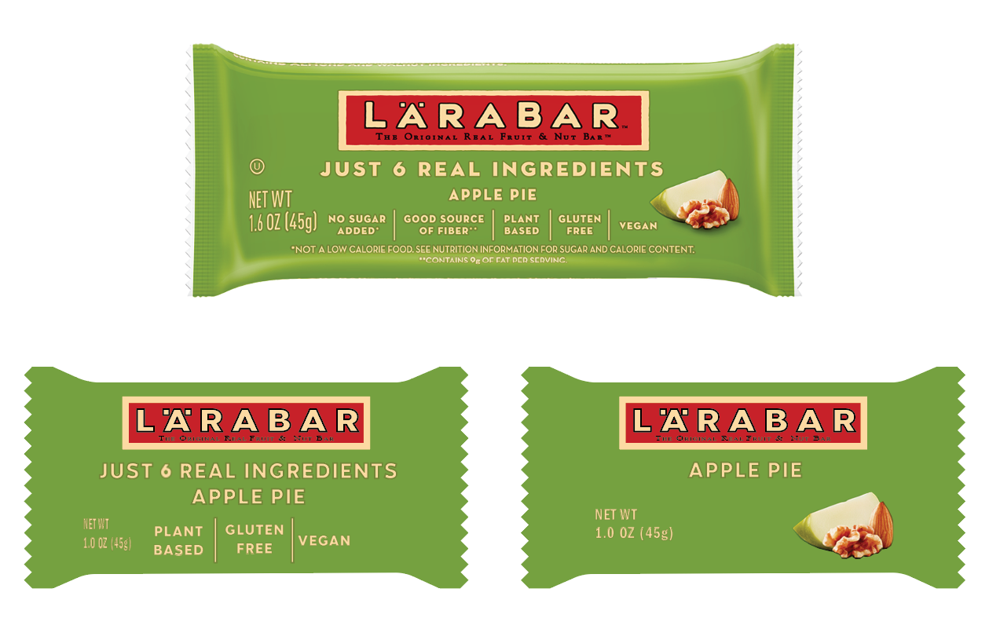
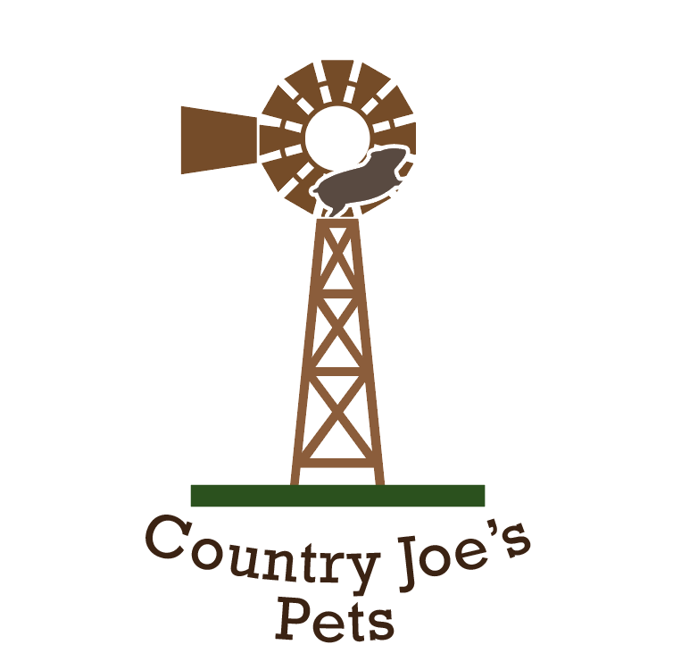
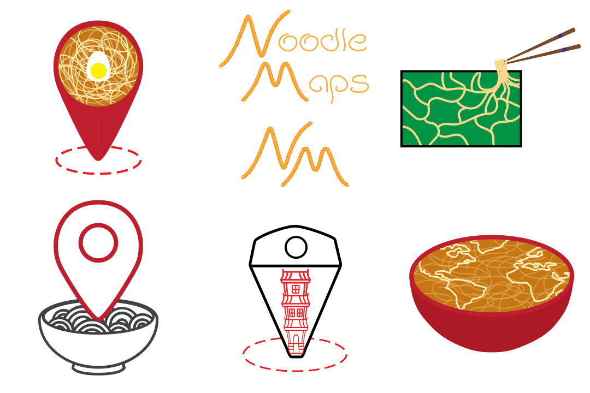

Overview
Tell the Story of What You Make is a design class at Olin College
taught by Professor Tim Sauder. I took it during my junior year, learning
to communicate ideas through visual design. The class emphasized
deliberate design, critique, and iteration.
Here are some of my favorite projects from the semester.
Selected Projects
Text Portrait
A self-portrait made entirely of text using a single font. I used a curly,
handwritten font to capture the shape of my hair and face.
Miniaturizing Bars
Packaging design exercise: taking the elements of a full-sized bar wrapper
and adapting them into a miniature version.

Punny Logo
A playful logo for the fictional “Country Joe’s Pets,” incorporating pun-based
design inspired by grocery store branding.

Infographic
Inspired by designer Nicholas Felton, who tracked yearly life data, I created
an infographic about my Thanksgiving break—tracking meals, activities, and even
how many dogs I pet.
Final Project: Noodle Maps Logo
For my final, I designed a logo for Noodle Maps.
After generating and iterating on multiple ideas, I settled on a bowl of noodles
shaped like a world map.


Outcome
Through this course, I learned how to approach design with
intentionality and iteration, how to give and receive critique,
and how to communicate complex ideas visually. These projects gave me a
foundation for design work that I now bring into my technical and creative projects.